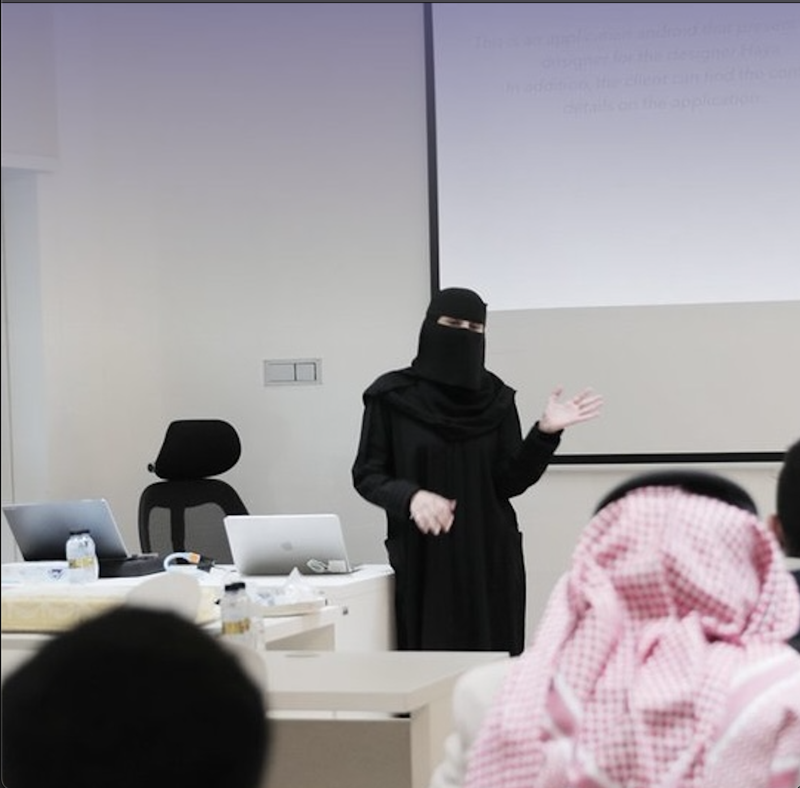

أنظمة الأعمال
إجراءات ERP، وقواعد الأعمال، والصلاحيات، وحالات الطلبات، ومعايير القبول، والتوثيق التقني.
مهندسة برمجيات · الرياض، السعودية
أنظمة ERP وأنظمة الأعمال خلفية في البيانات والذكاء الاصطناعي
أعمل على تطوير وتحسين أنظمة الأعمال من خلال الربط بين التنفيذ البرمجي، ومتطلبات النظام، والبيانات، والجودة. تشمل خبرتي العملية وحدات ERP، والواجهات المرتبطة بالـAPI، والمتطلبات التقنية، والاختبارات، ومراجعة جاهزية الأنظمة.

نبذة
أعمل بين التنفيذ، والمتطلبات، والبيانات، والجودة. أركّز على فهم طريقة عمل إجراءات النظام، وتحويل النواقص إلى متطلبات تقنية واضحة، والمساهمة في تقديم واجهات وتغييرات قابلة للاختبار والصيانة.
إجراءات ERP، وقواعد الأعمال، والصلاحيات، وحالات الطلبات، ومعايير القبول، والتوثيق التقني.
واجهات React وTypeScript، وربط REST APIs، والاختبارات الآلية، وطلبات السحب، ومراجعة الكود.
SQL، وتصميم قواعد البيانات، وتحليل البيانات، ومعالجة اللغة الطبيعية، ومشاريع الذكاء الاصطناعي.
الخبرة المهنية
MERP
شركة مساندة لخدمات الأعمال
عمل مستقل قائم على المشاريع
تطوير تطبيقات أندرويد باستخدام Kotlin، وأنظمة ويب باستخدام PHP وSQL، وتطبيقات سطح مكتب باستخدام Python.
أعمال مختارة
أعمال مختارة توضح تطور أساساتي التقنية إلى فهم أوسع لأنظمة الأعمال.
العمل المهني الحالي
المساهمة في إجراءات الأعمال، والواجهات المرتبطة بالـAPI، والصلاحيات، والاختبارات، والمتطلبات، والتوثيق التقني لوحدات ERP.
يُعرض العمل بمستوى عام لحماية كود الشركة وتفاصيل أنظمتها الخاصة.
مشروع تخرج جماعي في علم البيانات · 2025
تحليل تفاعلي لـ17,095 مراجعة سياحية في خمس مناطق سعودية، باستخدام معالجة اللغة الطبيعية، وتحليل المشاعر، ونمذجة الموضوعات بـLDA.
مشروع تخرج جماعي في الذكاء الاصطناعي · 2025
منصة تعليمية عربية للاستعداد لاختبار القدرات، تجمع بين التوليد المعزز بالاسترجاع وقاعدة منظمة من الأسئلة التاريخية.
مشروع جماعي خاص؛ لا يُنشر الكود أو بيانات الأسئلة الأصلية.
مشروع تخرج معسكر أندرويد · 2023
تطبيق جوال لاكتشاف المصممين الداخليين، واستعراض أعمالهم، والتواصل معهم من خلال تطبيق واحد.
التعليم والتدريب المتخصص
2014 – 2018
جامعة الطائف · المعدل 3.69 من 4.00 · مع مرتبة الشرف
فبراير – مايو 2025
الأكاديمية السعودية الرقمية وLe Wagon
أكتوبر – ديسمبر 2025
أكاديمية طويق · 200 ساعة
2023
أكاديمية طويق
الأدوات التقنية
React, TypeScript, JavaScript, HTML, CSS, Python, Kotlin
أنظمة ERP، وتحليل المتطلبات، وقواعد الأعمال، والصلاحيات المبنية على الأدوار، ومعايير القبول، ومفاهيم UAT، والتوثيق التقني
REST APIs, SQL, Database Design, FastAPI, Pandas, Data Analysis
Git, GitHub, Pull Requests, Automated Testing, Docker Fundamentals, CI/CD Fundamentals, Cloud Fundamentals
السيرة الذاتية
نسخة PDF مهيأة للمشاركة ولا تتضمن رقم هاتف منشورًا للعامة.
التواصل
إذا التقينا في LEAP، أو رغبت في مناقشة هندسة البرمجيات أو أنظمة ERP أو المنتجات المبنية على البيانات، يمكن التواصل معي من خلال الخيارات التالية.
الرياض، المملكة العربية السعودية